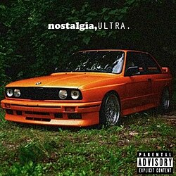

Frank Ocean, nome artístico de Christopher Edwin Breaux, nasceu em 28 de outubro de 1987, em Long Beach, Califórnia, Estados Unidos. Quando tinha cinco anos de idade, mudou-se com sua família para Nova Orleans, Louisiana, cidade que teve grande importância em sua formação artística.
Ocean começou a se interessar por música ainda jovem e, posteriormente, estudou na Universidade de Nova Orleans.
Após o furacão Katrina atingir a região em 2005 e destruir sua casa e seu estúdio, ele deixou a universidade e se mudou para Los Angeles para tentar construir uma carreira na música.
Em Los Angeles, Frank Ocean começou trabalhando como compositor para outros artistas. Durante esse período, escreveu músicas para nomes como John Legend,
Brandy e Justin Bieber. Inicialmente, chegou a utilizar o nome artístico Lonny Breaux.
Em 2009, Ocean assinou um contrato com a gravadora Def Jam como artista solo. No mesmo período, aproximou-se do coletivo de hip-hop Odd Future,
grupo que contava com artistas como Tyler, The Creator e Earl Sweatshirt. Essa aproximação ajudou a aumentar sua visibilidade no cenário musical.
Em fevereiro de 2011 Após enrolação da gravadora Def Jam Frank Ocean lançou de forma independente sua primeira grande obra, a mixtape "nostalgia, ULTRA.".
O projeto recebeu grande reconhecimento da crítica e do público, principalmente pelas músicas "Novacane" e "Swim Good".
A mixtape também chamou atenção pela maneira como Ocean misturava R&B, soul, hip-hop e elementos experimentais,
com essa visibiliadde foi convidado a participar do álbum "Watch the Throne" dos rappers Kanye west e Jay-Z 2 dos Maiores da industria na época,
cantando e participando da produção das faixas "No Church in the Wild" e "Made in America"
Em 2012, lançou seu primeiro álbum de estúdio, "channel ORANGE". O álbum foi extremamente bem recebido pela crítica e apresentou músicas como
"Thinkin Bout You", "Pyramids", "Sweet Life", "Lost" e "Super Rich Kids".
O trabalho alcançou o segundo lugar na Billboard 200 e consolidou Frank Ocean como um dos principais nomes do R&B contemporâneo. O álbum também lhe rendeu um Grammy.
"Blonde" tornou-se uma das obras mais influentes de sua carreira. O álbum apresenta uma abordagem mais experimental e intimista, explorando temas como amor,
identidade, memória, amadurecimento e relacionamentos. Entre suas músicas mais conhecidas estão
"Nikes", "Ivy", "Pink + White", "Solo", "Self Control", "Nights" e "White Ferrari".
A partir de 2017, Frank Ocean passou a lançar principalmente singles e colaborações, além de apresentar seu programa de rádio "Blonded Radio".
Entre seus lançamentos desse período estão "Chanel", "Biking", "Lens", "Provider", "Moon River", "DHL", "In My Room", "Dear April" e "Cayendo".
